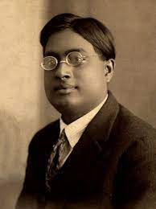

(1 January 1894 – 4 February 1974)
Satyendra Nath Bose (1 January 1894 – 4 February 1974) was an Indian
mathematician and physicist specializing in theoretical physics. He is
best known for his work on quantum mechanics in the early 1920s, in
developing the foundation for Bose–Einstein statistics and the theory of
the Bose–Einstein condensate. A Fellow of the Royal Society, he was
awarded India's second highest civilian award, the Padma Vibhushan, in
1954 by the Government of India.The class of particles that obey Bose
statistics, bosons, was named after Bose by Paul Dirac.
Early life
-
Bose was born in Calcutta (now Kolkata), the eldest of seven
children in a Bengali Kayastha[11] family. He was the only son, with
six sisters after him. His ancestral home was in the village Bara
Jagulia, in the district of Nadia, in the Bengal Presidency.
-
His schooling began at the age of five, near his home. When his
family moved to Goabagan, he was admitted into the New Indian
School. In his final year of school, he was admitted into the Hindu
School.
-
He passed his entrance examination (matriculation) in 1909 and stood
fifth in the order of merit. He then joined the intermediate science
course at the Presidency College, Calcutta, where his teachers
included Jagadish Chandra Bose, Sarada Prasanna Das, and Prafulla
Chandra Ray.
-
Bose received a Bachelor of Science in mixed mathematics from
Presidency College, standing first in 1913. Then he joined Sir
Ashutosh Mukherjee's newly formed Science College where he again
stood first in the MSc mixed mathematics exam in 1915. His marks in
the MSc examination created a new record in the annals of the
University of Calcutta, which is yet to be surpassed.
-
After completing his MSc, Bose joined the Science College, Calcutta
University as a research scholar in 1916 and started his studies in
the theory of relativity. It was an exciting era in the history of
scientific progress. Quantum theory had just appeared on the horizon
and significant results had started pouring in.
-
As a polyglot, Bose was well versed in several languages such as
Bengali, English, French, German and Sanskrit as well as the poetry
of Lord Tennyson, Rabindranath Tagore and Kalidasa. He could play
the esraj, an Indian instrument similar to a violin. He was
actively involved in running night schools that came to be known as
the Working Men's Institute.
Research career
-
Satyendra Nath Bose is revered as the great Indian theoretical
physicist renowned for his work on quantum mechanics. His area of
research was the theory of relativity. In 1924, he derived Planck's
quantum radiation law in a paper without reference to classical
physics.
Bose–Einstein statistics
-
Satyendra Nath Bose created this hypothesis in 1924 after realising
that a group of identical and indistinguishable particles may be
distributed in this fashion. Later, Albert Einstein and Bose worked
together to expand the concept. A group of non-interacting,
indistinguishable particles may occupy a set of available discrete
energy states in thermodynamic equilibrium in one of two ways,
according to Bose-Einstein statistics. The cohesive streaming of
laser light and the frictionless creep of superfluid helium are both
explained by the aggregation of particles in the same state, a
property of particles following Bose-Einstein statistics. Only
particles that are not constrained to single occupancy of the same
state—i.e., particles that do not adhere to the Pauli exclusion
principle restrictions—are subject to the Bose-Einstein statistics.
Such particles are known as bosons particles because they have
integer spin values. Paul Dirac first used the name boson to honour
Satyendra Nath Bose’s contribution.
Honours
-
Bose was awarded Padma Vibhushan, one of the highest civilian awards
in the country, by the Indian government in 1954 and five years
later, was appointed as National Professor, the highest honour in
India for scholars. He lived the remainder of his life in Kolkata,
until his death in 1974.
Nobel Prize nomination
-
Bose was nominated by K. Banerjee (1956), D.S. Kothari (1959), S.N.
Bagchi (1962), and A.K. Dutta (1962) for the Nobel Prize in Physics,
for his contribution to Bose–Einstein statistics and the unified
field theory. Banerjee, head of the Physics Department, University
of Allahabad, in a letter of 12 January 1956 wrote to the Nobel
Committee as follows: "(1). He (Bose) made very outstanding
contributions to physics by developing the statistics known after
his name as Bose statistics. In recent years this statistics is
found to be of profound importance in the classifications of
fundamental particles and has contributed immensely to the
development of nuclear physics. (2). During the period from 1953 to
date, he has made a number of highly interesting contributions of
far-reaching consequences on the subject of Einstein's Unitary Field
Theory." Bose's work was evaluated by an expert of the Nobel
Committee, Oskar Klein, who deemed his work worthy of a Nobel
Prize.
My gratitude to S.N. Bose
- Without you, Physics is incomplete. I cannot express my gratitude in words, but I will say only one sentence for you that "You are the great, Sir"